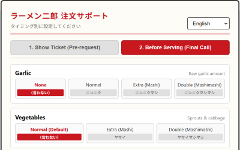
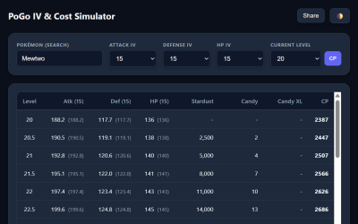

Makoto Kanda
Portfolio & Works • Miles Alder
Web Apps & Digital Craft


LINE Sticker Automation Toolkit
A set of practical Python scripts designed to streamline batch processing, canvas padding, and format compliance for LINE Creators.